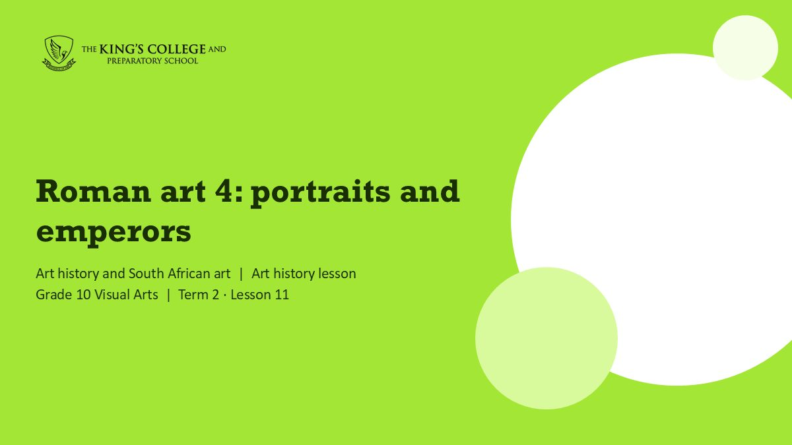

Term 2 · Lesson 11 · Art history lesson
Roman Art 4: Portraits and Emperors
Start Here
Today I Will
- Explain verism in Republican portraits
- Analyse the Augustus of Prima Porta as an imperial image
- Explain how triumphal arches and columns tell stories of power
Would you trust a leader more if his portrait showed every wrinkle, or if it made him look young and perfect?
Words to Know
| Word | Meaning |
|---|---|
| Verism | Extreme realism in portraiture, showing wrinkles, age and flaws honestly. |
| Imperial portrait | A portrait of an emperor, usually idealised to look youthful, calm and god-like. |
| Triumphal arch | A monumental arch built to celebrate a victory or an emperor. |
| Relief | Sculpture that projects from a flat background, in low or high relief. |
| Continuous narrative | A story told in a sequence of scenes that flow into one another. |
Slides

Notes
Republican verism and imperial portraits (Augustus of Prima Porta); triumphal arches and columns.
Two Kinds of Roman Portrait
| Republican verism | Imperial idealism |
|---|---|
| Older men with deep wrinkles, sagging skin and serious faces. | A youthful, smooth face that does not age, even as the emperor does. |
| Age suggests wisdom, experience and service to the Republic. | Perfection suggests the emperor is god-like and born to rule. |
| Mostly busts and heads, linked to family ancestor portraits. | Full figures in heroic poses, often borrowing Greek ideals such as the Doryphoros. |
| Values: duty, seriousness (gravitas), the family line. | Values: peace, victory, divine favour and the new imperial order. |
Monuments of Victory
- Triumphal arches: Large free-standing arches with inscriptions and reliefs, placed on routes where processions passed.
- Arch of Titus (c. 81 CE): Its reliefs show a triumphal procession after the capture of Jerusalem in 70 CE, with spoils from the Temple.
- Trajan's Column (113 CE): A spiral frieze about 200 m long records Trajan's campaigns in continuous narrative.
- Equestrian statues: The bronze Marcus Aurelius (c. 175 CE) shows calm command over the empire from horseback.
The Republic honoured the wrinkles; the emperors erased them.
Practical
You need: History booklet, VJ, comparison grid
Comparing a Veristic Head with Augustus
- Copy a two-column grid with the headings Veristic head and Augustus of Prima Porta.
- Describe: for each work write date, medium, size and what is shown.
- Analyse: compare face, surface texture, pose and gesture using the FET formula: identify, describe, effect.
- Interpret: what message does each portrait send about the man and his role?
- Opinion: which portrait do you find more convincing, and why? Write two sentences each.
Activities 1 and 2 hand-in (date to be confirmed in Term 2).
Test Yourself
- Define verism.
- Explain why imperial portraits of Augustus never show him growing old.
- Identify the type of narrative used on Trajan's Column and explain how it works.
Show answers
1. Extreme realism that shows age and flaws honestly. 2. An ageless, ideal image presented him as god-like and permanently in control, which was propaganda. 3. Continuous narrative: scenes flow into one another in a spiral band, so the viewer follows the story upwards.
Finished Early?
See the difference between verism and idealisation with your own pencil.
- Draw two small oval heads side by side in your VJ.
- Make the first veristic: add wrinkles, sagging skin and a serious mouth.
- Make the second idealised: smooth, youthful and calm.
- Under each, write the message it sends about the man.